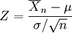

This formula will return the T cumulative distribution (student's t-distribution) for a degree of freedom > 0. When there is a need to estimate the mean of a normally distributed population for a given sample, the t-distribution comes into action. It is the basis of the popular t-tests to find out the difference between two sample means.
For a sample with size n drawn from a normal population with mean μ and standard deviation σ. Let and s denote the sample mean and sample standard deviation respectively. Then the quantity

gives the t-distribution for n-1 degrees of freedom.
Using the Formula
TCumulativeDistribution is calculated using the Statistics.UtilityFunctions class. The following table describes this function's parameters and its values.
|
Method Name |
Parameters |
Return Value |
|
TCumulativeDistribution |
1. tValue: the T value for which you want the distribution. 2. degreeOfFreedom: an integer value that represents the degree of freedom. 3. oneTail: If true, one-tailed distribution is used; otherwise two-tailed distribution is used. |
A double that represents the T cumulative distribution function probability. |
Example
Here is a code snippet that shows a sample usage.
|
[C#]
using Syncfusion.Windows.Forms.Chart.Statistics; double x= Statistics.UtilityFunctions.TCumulativelDistribution(tvalue, degreeOfFreedom,OneTail ); |
|
[VB.NET]
Imports Syncfusion.Windows.Forms.Chart.Statistics double x= Statistics.UtilityFunctions.TCumulativelDistribution(tvalue, degreeOfFreedom,OneTail ) |